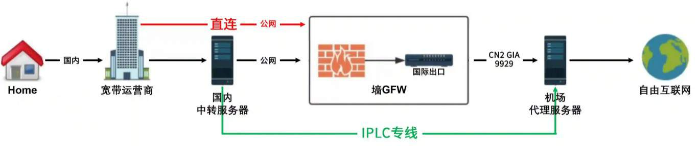

Ink Cloud 是一家提供 VPS 和云服务器的服务商，其服务器所使用的是 Iplc 线路。Iplc 线路是指国际专线连接，相对于普通的 Internet 线路更为稳定，速度也更快。因此，选择使用 Ink Cloud 提供的 VPS 服务器可以获得更好的网络稳定性和较高的访问速度。
| 入 口 | 出 口 | CPU | 内存 | 硬盘 | 带宽 | 流量 | 架构 | 端内延迟 | 价钱 | |
| 东莞电信 | 香港 | 1核 | 384M | 8G | 75Mbps | 200GB/月 | KVM-VPS （单端双独立IP） |
5ms | ¥589.00 | 立即订购 |
| 东莞电信 | 香港 | 1核 | 384M | 8G | 100Mbps | 500GB/月 | KVM-VPS （单端双独立IP） |
5ms | ¥669.00 | 立即订购 |
| 东莞电信 | 香港 | 1核 | 384M | 8G | 75Mbps | 200GB/月 | NAT-VPS （单端双共享IP） |
5ms | ¥439.00 | 立即订购 |
| 东莞电信 | 香港 | 1核 | 384M | 8G | 100Mbps | 500GB/月 | NAT-VPS （单端双共享IP） |
5ms | ¥519.00 | 立即订购 |
| 东莞电信 | 香港 | 1核 | 512M | 8G | 150Mbps | 800GB/月 | NAT-VPS （单端双共享IP） |
5ms | ¥609.00 | 立即订购 |
| 东莞电信 | 香港 | 2核 | 1G | 8G | 200Mbps | 1.5TB/月 | NAT-VPS （单端双共享IP） |
5ms | ¥809.00 | 立即订购 |
| 入 口 | 出 口 | CPU | 内存 | 硬盘 | 带宽 | 流量 | 端内延迟 | 价钱 | |
| 上海电信 | 韩国 | 1核 | 384M | 8G | 50Mbps | 200GB/月 | 22-24ms | ¥599.00 | 立即订购 |
| 上海电信 | 韩国 | 1核 | 384M | 8G | 100Mbps | 400GB/月 | 22-24ms | ¥799.00 | 立即订购 |
| 上海电信 | 韩国 | 1核 | 384M | 8G | 150Mbps | 600GB/月 | 22-24ms | ¥999.00 | 立即订购 |
| 上海电信 | 韩国 | 2核 | 512M | 8G | 200Mbps | 1TB/月 | 22-24ms | ¥1,299.00 | 立即订购 |
该平台还包含：上海-美国IPLC专线，东莞-香港IPLC专线，深圳腾讯-香港IPLC专线，深圳阿里云-香港IPLC专线，上海-韩国IPLC专线，上海-日本IPLC专线，上海-美国IPLC专线，北京-德国IPLC专线，深圳-新加坡IPLC专线
Ink Cloud 是一个位于中国香港的 VPS 服务商。他们提供高性能、高可扩展性的云服务器，以及各种虚拟化解决方案，例如 OpenVZ、KVM、Xen 等等。他们的服务器分布在中国及全球各地的多个数据中心，包括中国香港、美国、日本、新加坡和欧洲等地。除了 VPS 外，Ink Cloud 还提供了其它互联网服务，如 CDN、DNS、Web 托管等等。他们的客服团队非常专业，并且随时准备帮助用户解决技术难题。
Crastar是一家成立于香港、提供云计算及网络解决方案的企业。该公司为客户提供多种产品和服务，包括虚拟专用服务器(VPS)、独立服务器、CDN加速、IPLC专线等。其中IPLC专线是Crastar的核心业务之一，该服务提供高速、稳定、安全的跨国互联网连接。
| 广港IPLC | 2 | 2GB | 20GB | 独享1个广州BGP+1个香港 IPv4 | 5Mbps 起售 | ￥500.00 | 立即订购 |
| 沪美IPLC | 2 | 2GB | 20GB | 独享1个上海BGP+1个美国 IPv4 | 5Mbps 起售 | ￥1350.00 | 立即订购 |
| 沪韩IPLC | 2 | 2GB | 20GB | 独享1个上海BGP+1个韩国 IPv4 | 5Mbps 起售 | ￥850.00 | 立即订购 |
| 沪日IPLC | 2 | 2GB | 20GB | 独享1个上海BGP+1个日本 IPv4 | 5Mbps 起售 | ￥800.00 | 立即订购 |
PQS是一家成立于2015年的台湾主机商，主要提供台湾VPS,香港vps,深台专线云主机,韩国云主机等，可选独立IP或者NAT，基于KVM虚拟架构，台湾VPS提供原生IP，去程PCCW，回程NTT 500Mbps，可看 动漫疯、NF奈飞、LINE TV等，支持Paypal、支付宝、微信付款、信用卡等付款方式。
以下套餐，均独立1个深圳电信静态IPv4，入口深圳电信/出口香港BGP/端內2ms，80/443端口不开放使用
| 2 vCPU | 2048MB | 10GB | 不限流量 | 独享10Mbps | 架构：KVM | ¥1,200 | 立即订购 |
| 2 vCPU | 2048MB | 10GB | 不限流量 | 独享20Mbps | 架构：KVM | ¥2,200 | 立即订购 |
| 2 vCPU | 2048MB | 10GB | 不限流量 | 独享30Mbps | 架构：KVM | ¥3,000 | 立即订购 |
| 2 vCPU | 2048MB | 10GB | 不限流量 | 独享40Mbps | 架构：KVM | ¥4,000 | 立即订购 |
| 2 vCPU | 2048MB | 10GB | 不限流量 | 独享50Mbps | 架构：KVM | ¥5,000 | 立即订购 |
| 4 vCPU | 4G | 40GB | 不限流量 | 独享100Mbps | 架构：KVM | ¥9,900 | 立即订购 |
| 4 vCPU | 4G | 40GB | 不限流量 | 独享200Mbps | 架构：KVM | ¥19,800 | 立即订购 |
CloudIPLC是一家提供高品质云服务器的服务商，其主要业务包括全球共享云服务器、按需分配资源等。据称该公司采用全球领先的技术方案和高性能硬件以及高速网络连接，为用户提供可靠稳定的服务，并且提供了多种付款方式和技术支持。CloudIPLC是一家提供高品质IPLC服务的公司，其IPLC产品主要特点有：
高速传输：采用最新的硬件设备和高速光缆技术，保证数据在Internet上高速稳定地传输。
稳定性强： CloudIPLC在全球范围内提供高质量的Internet基础设施，确保网络连接和数据传输的可靠性和稳定性。
价格优惠：CloudIPLC的价格具有非常大的竞争力，可以让用户以较低的价格获得高质量的IPLC服务。
灵活性强：CloudIPLC提供多种IPLC产品选项，可以根据客户的需求进行个性化定制，满足各种业务应用场景。
总之，CloudIPLC的IPLC产品具有高可靠性、高速度、灵活性等优势，同时价格合理，非常适合需要海外专线服务的用户选择。
| 名称 | CPU（共享） | 内存 | 硬盘 | 地址 | 流量 | 带宽 | 价格(月付) | 方向（NTT/BBIX出） | |
| IPLC TY-NAT | 1 vCPU | 512 MB | 5G SSD | 共享IP | 100 GB | 20 Mbps | ￥79.99 | 上海BGP入->东京 | |
| IPLC TY-NAT | 1 vCPU | 512 MB | 5G SSD | 共享IP | 100 GB | 40 Mbps | ￥109.99 | 上海BGP入->东京 | |
| IPLC TY-NAT | 1 vCPU | 1 GB | 10G SSD | 共享IP | 100 GB | 70 Mbps | ￥139.99 | 上海BGP入->东京 | |
| IPLC TY-NAT | 1 vCPU | 1 GB | 10G SSD | 共享IP | 100 GB | 100 Mbps | ￥169.99 | 上海BGP入->东京 | 立即订购 |
VPC.KR是一家韩国的VPS服务商，提供高性能的韩国VPS产品。他们提供多个不同的VPS配套方案，包括SSD VPS、Cloud VPS和DDoS防护VPS。他们的VPS产品基于KVM虚拟化技术，可为用户提供高效稳定的计算资源。
| 名称 | 价钱（美元） | CPU | 内存 | 硬盘 | 流量 | 带宽（共享） | |
| 大陆入→韩国出 | $ 16.99 /月 | 1 | 1 GB | 5 GB | 150GB | 200 Mbps | 立即订购 |
| 大陆入→韩国出 | 69.99 美元/月 | 2 | 2 GB | 10 GB | 500GB | 200 Mbps | 立即订购 |
| 大陆入→香港出 | $ 14.99 /月 | 1 | 1 GB | 5 GB | 100GB | 200 Mbps | 立即订购 |
| 大陆入→香港出 | 69.99 美元/月 | 2 | 2 GB | 10 GB | 500GB | 200 Mbps | 立即订购 |